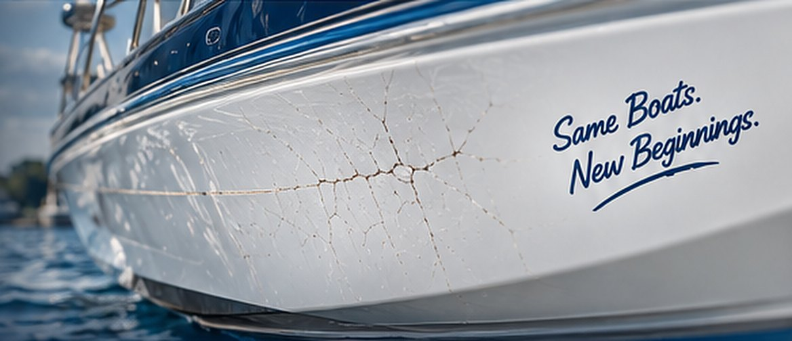
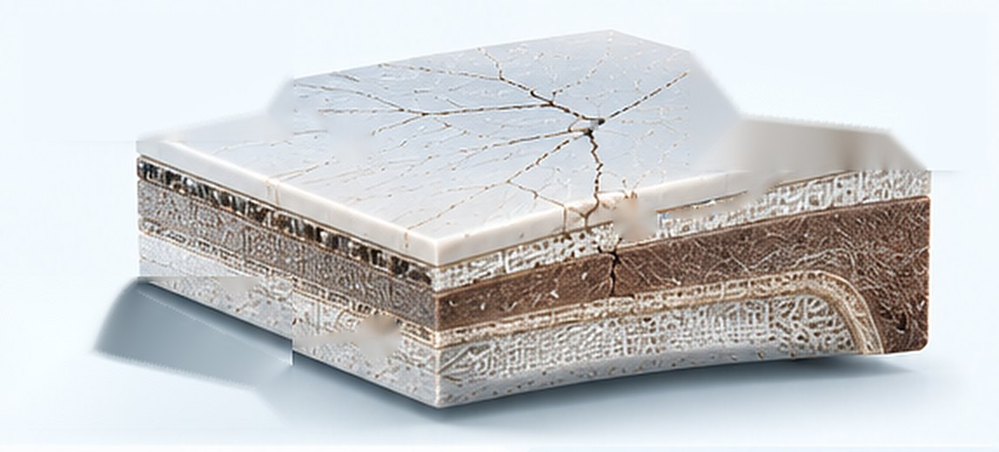
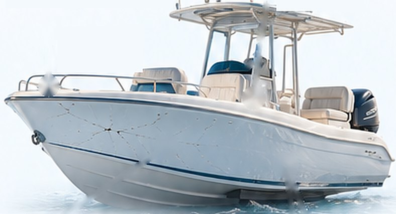
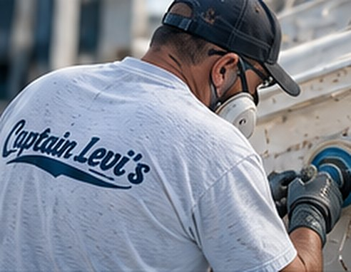
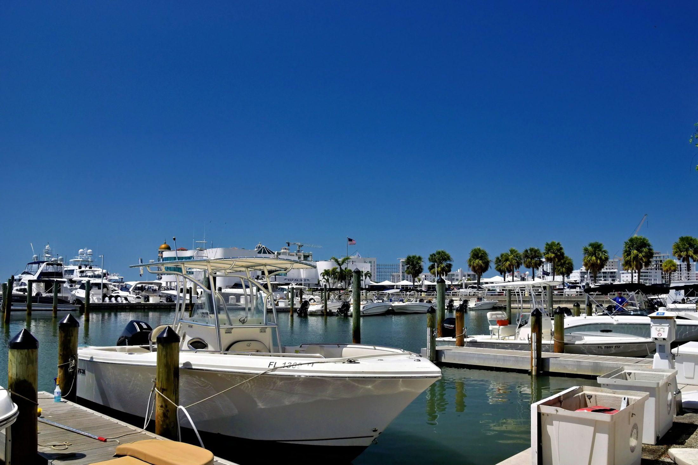

Stress cracks are more than just a cosmetic issue. They can allow water intrusion, weaken the laminate, and lead to costly structural repairs if left untreated. We repair stress cracks the right way — restoring strength, preventing further damage, and matching the finish so your boat looks like new again.
Stress cracks are fine, often spiderweb-like cracks in the gelcoat caused by repeated flexing, vibration, or impact. They’re commonly found on high-stress areas such as the hull sides, around fittings, on the deck, and near high-speed chines. While they may start as surface-level cracks, they can eventually allow water to enter the laminate and lead to more serious structural damage.
Get Your Boat Inspected


We use proven marine repair techniques and high-quality materials to ensure a seamless, long-lasting repair.
We assess the crack pattern, determine the cause, and check for underlying damage.
Carefully sand and open the crack to ensure proper adhesion.
Apply marine-grade gelcoat and, if needed, reinforce with fiberglass laminate.
Match your exact gelcoat color and blend the repair for a seamless finish.
See how we remove stress cracks and restore the original color, clarity, and shine to your boat’s gelcoat.
With over 50 years of fiberglass repair experience, we deliver high-quality results that keep your boat looking its best. From small cosmetic repairs to structural fixes, we’re the team boaters across Tampa Bay trust.
Many start in the gelcoat only, but they’re a sign the area is flexing or taking load. Left alone they let water reach the laminate and can spread. We check whether the fiberglass underneath is sound before we quote, so you know which kind you have.
Yes. We tint the gelcoat to your hull as it looks today, including any fading, then blend and polish the repair so it disappears into the surrounding finish.
A few small cracks are often finished in a day or two. Larger areas, or cracks that need the laminate reinforced, take longer to allow for cure time — we give you a timeline with the quote.
Not if the cause is fixed. That’s why we find out what’s flexing first — a loose fitting, a thin laminate or a weak spot — and reinforce it before we refinish, instead of just filling the crack.
It depends on how many cracks there are, how far they run and whether the laminate needs reinforcing. Send us a few photos through the form below or call 727-391-7639 for a free quote.

Get a free quote or talk directly with Captain Dave about your repair.
Have stress cracks you want looked at, need a quote, or ready to schedule? Fill out the form or give us a call — we’ll get back to you as soon as possible. Your boat deserves the best, and we’re here to make it happen.
Tell us a little about your project and we’ll get back to you quickly.